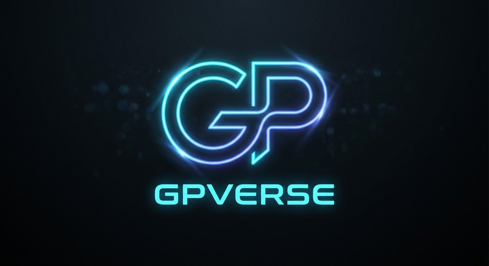

Studio di registrazione per il podcast. Usa le cuffie: il microfono deve sentire solo la tua voce, la musica la mixa OnAir.
V4.2.0Nessun testo. Incolla la scaletta o il testo della puntata con ✎ Modifica testo, oppure carica un file .txt.
Nel testo puoi mettere i segnali [SIGLA], [SOTTOFONDO], [CAPITOLO]: quando la riga di lettura li raggiunge, OnAir li lancia da solo.
Il video si registra con l'effetto già applicato. Tieni OnAir in primo piano mentre registri: se la finestra è nascosta il browser rallenta il video.
Questi livelli valgono per l'ascolto e sono il punto di partenza del mix finale. Dopo la registrazione li ritocchi in Sessioni, con l'anteprima, prima di esportare. ↺ riporta la fonte al suo livello predefinito, che imposti con ★ dentro «Gain ed EQ». Mute spegne solo l'ascolto in cuffia.
Clicca sull'onda per riascoltarti da quel punto. Qui senti solo la voce; la musica torna al punto giusto quando riparti.
Tasti: Spazio play · S dividi · Canc taglia/elimina · M silenzia · C capitolo · ← → sposta il cursore · Ctrl+Z annulla · Esc chiudi.
Ogni registrazione resta salvata in questo browser: puoi rifare il mix e riesportarla quando vuoi.
Lavoro dell'app: misura in corso…
Cosa pesa di più, in ordine: risoluzione del video (540p pesa circa la metà di 720p), effetto contorni senza accelerazione grafica, modalità «Persone», riduzione rumore AI. In modalità leggera l'anteprima scende a 15 fotogrammi al secondo e gli indicatori del mixer si aggiornano meno spesso; durante la registrazione il video resta a piena velocità.
Ogni categoria ha il suo riquadro, la sua riga nel mixer, la sua traccia nel montaggio e il suo segnale nel teleprompter (per esempio [APPLAUSI]). Valgono per tutte le puntate; ogni sessione registrata ricorda le sue. Il tasto si sceglie in «Scorciatoie».
Si applica mentre registri: quello che senti nella prova è quello che finisce nella puntata.
Tieni le stesse impostazioni sul PC di casa, sul portatile e sul tablet. OnAir le salva in un tuo repository privato su GitHub. Le registrazioni non vengono sincronizzate: per quelle usa «Trasferisci» in Sessioni.
onair-sync, su github.com/new (solo la prima volta).Lo «studio» è tutto il resto tranne le registrazioni: sigla, sottofondi, capitoli, testo del teleprompter, logo, sfondo, mixer, disposizioni, tasti e piattaforme. Salvalo in un file .onair e aprilo su un altro dispositivo (PC, tablet). Microfono e webcam scelti restano quelli del dispositivo. Le singole registrazioni si trasferiscono da Sessioni.
Scegli un set e modificalo: ogni modifica si salva subito (se parti da un set pronto, OnAir ne crea una copia tua). Metti il teleprompter dove guardi, cioè sotto la webcam.
Clicca il tasto accanto a un'azione e premi quello nuovo. Se è già usato, i due tasti si scambiano. I tasti 1–9 restano ai capitoli.